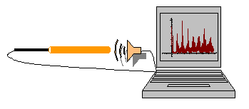
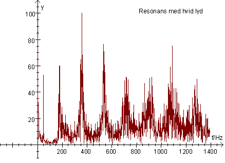

Ref. The Physics Teacher, vol. 39, okt. 2001.
Godt demonstrationsforsøg!
At eftervise resonans og udregne lydens hastighed i luft.
ApparaturPc, højttaler, mikrofon, paprør og programmet Datalyse.
|
 |
Start Datalyse og vælg apparat lydkort. Vælg mål lyd. I menuen for måleindstillinger kan man vælge:
| Lav pc-lyd |
|
Lav indledende forsøg med højttaler og mikrofon uden paprør med 440 Hz og med hvid lyd. Fourierspektret af hvid lyd skulle gerne vise et utal af frekvenser.
Anbring så højttaler, et åbent paprør og mikrofon som vist ovenfor og mål igen. Bestem resonansfrekvenserne og udregn lydens hastighed i luft.

Rørlængde: 90 cm, diameter: 6 cm. Antal målinger: 10000. Tid pr måling: 90,7 ms. Antal punkter til fourieranalyse: 8192.